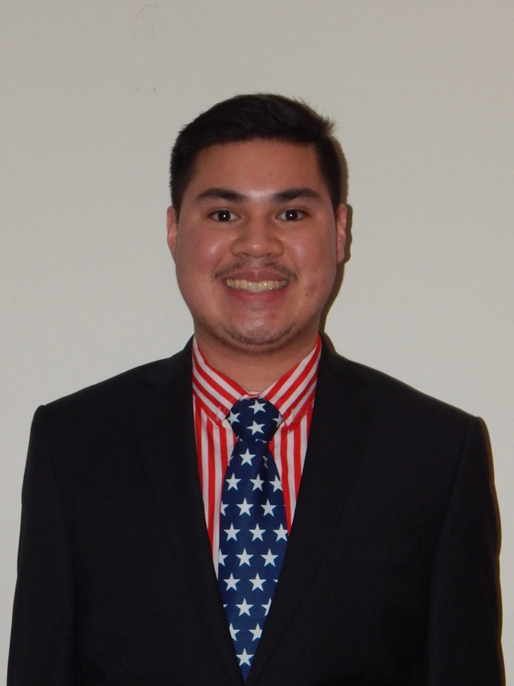

My name is Ethan Chen and I am an American-born Canadian programmer and analyst. I love to code various stuff, but also like to fly various aircraft. My journey has embarked me to becoming an expert programmer. Even though I was not raised in The States, I still consider this my home, but Canada as my secondary home because I grew up there.
Some of the things I enjoy doing are programming a game, gaming, fishing, flying, gardening, and building stuff. I used to build stuff out of cardboard when I was younger, but I moved on to building wood. I don't watch that much movies since they're so boring, but I enjoy watching sports. There were some sports that I played before that I watch like basketball, football and soccer, and some that I became interested in like hockey and baseball. Because I am residing in Canada, I am a fan of both Toronto and Boston.
Recently, I have built many models out of cardboard like a piggy bank safe, a flight simulation, vending machines, and of course, my grandfather's business prior to his death.
As a college student, I have been working hard throughout my program, while working for the summers. I will be transferring to Ontario Tech to get my degree before going back home.
